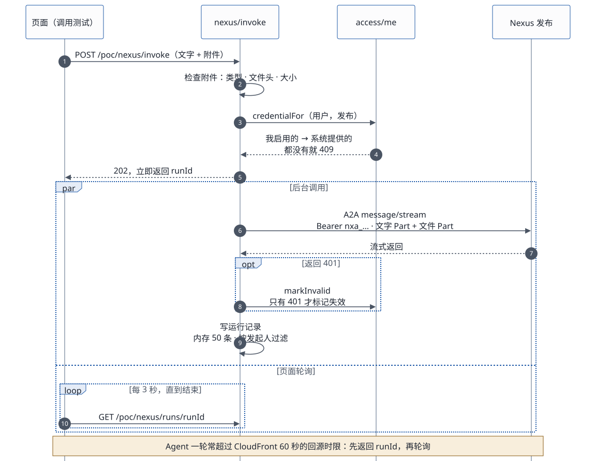

2026-10-20 更新。写的是现在线上跑着的样子，不是规划。数据全部虚构。第 11 节是模块与依赖，第 12 节是工作流；交付相关的文档见 交付文档索引。
相关文档：
- 开发者工作流：一个 Agent 从建好到在前端可用的每一步。
- 「我的 Nexus」（第一期已实现）：每个账号连接自己的 Nexus、启用
Agent，接口约定 agent-access-v1，见
skills/agent-access/references/interface.md。 - Skills 配置指南：Claude Code、Codex、Kiro CLI 里的两个 Skill（nexus-ai-operator、agent-access）怎么装、怎么连。
1. 一句话
九安审核平台 v0.5.3 的原服务端和原前端跑在一台 EC2 上，经 CloudFront
对外提供 https://andon-finance.tinyboat.blog。2026-10-19
起这台是测试台：跑九安开发包的副本（.build/jiuan）和九安自己的运行时，单据存在本机
MySQL 8.0 里。AI 能力都在 Nexus 上，由两个 Agent
提供。每个应用账号用自己的 Nexus API 密钥连接，看到自己发布的 Agent（带
A2A 名片）；粘贴调用密钥启用之后，就能在页面或命令行上调用测试。PoC
服务端用 A2A 调用它们。

2. 组件
浏览器（审核员 / 复核人，虚构账号）
│ HTTPS andon-finance.tinyboat.blog
CloudFront（不缓存；转发 Host、Origin、Cookie 与查询串）
│ HTTP :4180（安全组只放 CloudFront 回源前缀列表 pl-3b927c52，不开 22）
EC2 andon-finance-poc（t3.large；Nexus 同 VPC 公有子网；systemd 服务 andon-finance-poc，Node 24）—— 2026-10-19 起是测试台
├─ 九安原服务端 createAnalysisApp：会话、来源与 CSRF 校验、单据、规则库、预审、AI 建议服务
│ └─ 九安自己的 MySQL 存储（本机 Docker 容器 jiuan-mysql，mysql:8.0，只听 127.0.0.1）+ 两家虚构公司、8 张种子单据（每次启动按九安同步的写法写入，原文不变就不多版本）
├─ 九安的平台部分：平台存储、连接器登记、调用中间件、流水线运行器、平台中心（汇联易、钉钉都不接；会调汇联易的几站暂停）
├─ 九安代码：构建出来的副本（开发包 + 补丁 + 锁定的 mysql2），source/ 下的开发包不动
├─ 九安前端副本：九安原文件 + 少量锚点补丁 + nexus-poc.js / nexus-invoke.js / nexus-poc.css
└─ PoC 插件，挂在九安的 platformRoutes 钩子上（/api/analysis/v1/poc/*）
├─ 口令登录 /poc/login
├─ 审批流 /poc/approvals/*
├─ /poc/nexus/me*（每个账号的 Nexus 连接与启用，agent-access-v1）
│ └─ 账号目录 /var/lib/andon-finance/users/<账号>/：CLI 凭证、启用清单（调用密钥加密）、留痕
└─ Nexus Agent 页 /poc/nexus/*：调用测试（可带附件）、调用记录（按账号过滤）、附件规则、示例附件
│ ① A2A 0.3 message/stream，Bearer <这个账号启用时粘贴的 nxa_ 调用密钥>，可带文件 Part
│ ② A2A 名片 /a2a/<发布编号>/.well-known/agent-card.json（公开，不带密钥）
│ ③ REST（nexus-ai-operator CLI，每个账号一份凭证，用这个账号自己的 API 密钥）
Nexus nxs-beine1013（v0.3.28）（线上 Nexus AI 的实际地址：d3u3hj2us186y.cloudfront.net）
├─ 发布 pub_5c53e70d8dc7ddea → 九安审核AI（PoC） agent_56d44dd9…：审批建议、草稿核验
└─ 发布 pub_2cc24c29d2e5b2c9 → 九安知识Agent（PoC）agent_949d9bc4…：describe / answer / select / suggest_rules / propose两个发布都打开了 A2A 和 MCP 两个通道；PoC 只用 A2A。
3. 调用链
九安原前端怎么经九安原有的接口调到我们的 A2A Agent、九安和 Agent
模块之间的 6 个接缝、从汇联易到人工复核的处理流程，见前端到 A2A
Agent：调用链、解耦与处理流程。并入九安时各类 Agent 怎么经 A2A
接进来（Agent 接入框架、契约
jiuan.agent/v1、补丁分层），见Agent 接入框架（设计稿）。
审批流（2026-10-18 起：来单自动 AI 初审 + 一步人工复核）

- 来单：单据进入单据池后系统自动发起，不需要有人点。PoC
用单据池顶上的「模拟来单」（或
POST /poc/intake）按模板生成新的虚构单据来模拟；九安生产上应该是汇联易同步写入新单据之后触发，但九安现在的代码同步完只写库，不会自动发起（调用链与处理流程第 2、5 节）。原有的 8 张单据可以在单据详情里手动「发起 AI 初审」。 - 九安预审：基础检查与规则试跑（读原件之后）。
- AI 初审：九安自己的 AI 建议服务经 PoC
的模型客户端，用 A2A 把九安的任务说明、输出格式、PoC
加的输出规则（只输出
JSON；字符串里不用英文双引号，引用用「」）和输入数据（单据事实、规则试跑结果）发给「九安审核AI」。调用密钥从系统里读：发起人在
Agent 页启用的那把 → 别的账号启用的；都没有就报
AI_AUTH_INVALID；来单自动发起的没有「发起人」，直接用系统里启用的那把。失败时系统隔 5 秒自动重试一次，再失败就停在「AI 初审失败」。 - 显示建议：返回的结果用九安自己的校验函数检查；单据池的卡片上直接显示「AI 初审：结论 · 风险」，进行中的卡片每 4 秒自动刷新；详情页先显示建议，再是复核表单。
- 人工复核：一位复核人（两个 PoC 账号都可以）通过或退回，流程结束。和 AI 建议相反时必须写理由，退回必须写退回说明。PoC 只记建议和决定，不写回任何系统。
注意：九安的规则库现在只能存草稿、不能发布，预审拿到的规则是空的，所以 AI 初审目前收不到客户规则的结果。怎么接上，见客户规则与 AI 初审。
调用测试（「Nexus Agent」页）

- 选一个发布，用下面三种方式之一，可以带附件：
- 自由文本；
- 审批建议：选一张单据；
- 按任务：先读这个 Agent 的能力清单，再选任务、填输入。
- 页面调用
POST /poc/nexus/invoke，接口立即返回运行记录编号。Agent 一轮常常超过 CloudFront 60 秒的回源时限，所以页面轮询结果。 - 服务端先检查附件（见第 5 节），再发一条 A2A 消息：先是文字 Part，后面跟着文件 Part。
- 结果记进运行记录：最多 50 条，存在内存里，重启后清空。附件只记名称、类型、大小和 sha256。
发现与启用（「Nexus Agent」页的「我的 Nexus
连接」和「我的 Agent」，或命令行 agent_access.py）

- 连接：每个账号用自己的 Nexus API
密钥连接（
POST /poc/nexus/me/connect）。PoC 为这个账号单独起一份 operator CLI 凭证（users/<账号>/nexus/），API 密钥交给 CLI 保存，PoC 自己不留。 - 列出：
GET /poc/nexus/me经 REST 列出这个账号能看到的发布（自己的加上共享给他的），以及还没发布的 Agent；每个发布带 A2A 名片（名称、协议版本、能否流式、接受哪些附件类型）。列表超过 60 秒先刷新。 - 启用：粘贴这个发布的调用密钥（
POST /poc/nexus/me/agents/<发布编号>/enable）。当场验证两件事，都不花钱：名片读得到；用这把密钥发一个tasks/get，Nexus 认这把密钥。通过后用REGISTRY_KEY（AES-256-GCM）加密，存进这个账号的enabled.json。默认顺便读一次能力清单（{"task": "describe"}，约 0.03 美元）。不带密钥再调一次，就是用已保存的密钥重新验证。 - 调用：用「我启用的」那把调用密钥。只有 Nexus 回 401，才把这把密钥标记为失效，在页面上「换密钥」就好。
- 停用：删掉这一项，可以重复停用。每一步都记进这个账号的
audit.jsonl。
4. 两个 Agent
| 九安审核AI（PoC） | 九安知识Agent（PoC） | |
|---|---|---|
| 发布 / Agent | pub_ /
agent_ |
pub_ /
agent_ |
| 约定在哪 | 调用方：每次请求带九安的任务说明与输出
schema（providers/） |
Agent 自己：任务、输入输出格式写在提示词里，发 describe
可以取回能力清单 |
| 输出 | 九安的审批建议 JSON，九安校验 | 带 task 与 version 的 JSON；有附件时多一个
attachmentsRead |
| 版本 | 跟随最新 | 跟随最新；提示词
knowledge-（audit-） |
| 工具 | 无 | 无 |
知识 Agent 的知识（公司层 6 条、部门层 6 条、部门目录）写在提示词里，全部虚构。下面这些都要等 Nexus 有存储后才做，见第 9 节：
- 写入和修改知识；
- 个人层知识；
- 长期记忆；
- 把资料整理成知识库条目（ingest）。
5. 附件
类型：
- 图片：png、jpg、webp、gif；
- 文档：PDF、Word（docx）；
- 表格：Excel（xlsx、xls）、CSV；
- 文本：Markdown、txt、JSON、YAML、XML、HTML。
上限：最多 5 个，单个不超过 5 MB，合计不超过 6 MB。Nexus 本身允许单个 20 MB、合计 40 MB；PoC 定得这么小，原因见第 9 节。
三层检查：
- 浏览器先挡一道，看类型、大小和个数；
- PoC
服务端再查一遍（
nexus/attachments.mjs）：类型以扩展名为准，图片、PDF 和 Office 文件要核对文件头，文本类必须是 UTF-8； - Nexus 网关最后再查，它的拒绝会转成「AI_REQUEST_INVALID」，附带 Nexus 的错误码。
模型怎么读：Nexus 把附件转成模型能直接读的内容，所以不带工具的 Agent 也能读：
- 图片和 PDF 原样交给模型；
- Excel 和 CSV 整理成摘要表；
- Word 和文本直接内联。
依据：
nexus_utils/multimodal_processing/content_block_builder.py，VM 运行时也走这条路。示例附件：
poc/app/samples/下 6 个虚构文件，由poc/tools/make-samples.py生成，页面上点一下就能加入：- FYBX-POC-001 的住宿发票：图片和 PDF 各一份；
- FYBX-POC-001 的票据数据 JSON、报销明细 Excel；
- 差旅制度 Markdown；
- DGZF-POC-002 的运维验收报告 Word。
6. 密钥与配置
- Agent 和 Nexus 的密钥不在任何文件里：每个账号在「Nexus Agent」页自己连接 Nexus、粘贴调用密钥启用（第 3 节），应用当场验证、加密存在这个账号的目录里。加、换、停用都不改文件、不部署、不重启。
- 启动配置：应用自己的启动配置只在本机的
audit-nexus/poc/infra/secrets.env（0600），一共六项，缺的由deploy.sh生成，样例见poc/infra/secrets.env.example：- 两个虚构账号的口令
REVIEWER_PASSWORD、CHECKER_PASSWORD； REGISTRY_KEY：加密各账号调用密钥用的 32 字节密钥（base64）；换掉它，所有账号都要重新启用 Agent；- 测试台的三项：
BENCH_MYSQL_ROOT_PASSWORD、BENCH_MYSQL_APP_PASSWORD、BENCH_DATA_KEY。 - 旧文件里如果还有
NEXUS_A2A_KEY_…、E2E_…几行，是以前留下的兜底，已经不用了。deploy.sh现在会把整个文件传到实例上，应改成按白名单生成服务端的文件（评审 I3，交接文档第 6.1 节）。
- 两个虚构账号的口令
- 每个账号的数据：在实例的
/var/lib/andon-finance/users/<账号>/（目录 0700，文件 0600），重启、重新部署都不丢，实例被替换才会丢。里面有这个账号的 CLI 凭证、enabled.json（调用密钥已加密）、connection.json（不含密钥）和audit.jsonl。 - 怎么到实例上：
deploy.sh把文件传到加密的构件桶，再装到实例的/etc/andon-finance/secrets.env（root:andon，0640）。- 服务启动时读一次，改了要重启（
deploy.sh会重启服务）； - 实例角色明确禁止读 SSM 参数。
- 服务启动时读一次，改了要重启（
- 不进构件、不进文档：调用密钥只能由 Nexus
网页登录的本人签发（
api/v2/services/access_credential_service.py:283-286）。 - 普通配置（站点地址、端口、Nexus
地址、审批建议用哪个发布）：在 CloudFormation
栈参数里。每次部署都会按栈参数重写实例的
/etc/andon-finance/env。
7. 部署与测试
基础设施：CloudFormation 栈
andon-finance-poc，模板poc/infra/andon-finance-poc.yaml，资源有 EC2、EIP、安全组、构件桶、CloudFront 和 Route 53 记录。部署：
poc/infra/deploy.sh [--code-only]依次做这些事：- 跑单元测试；
- 构建九安副本（
poc/bench/build-jiuan.sh：复制开发包、打补丁、装mysql2）、生成前端副本； - 建栈或更新栈（只部署代码时跳过）；
- 打包上传；
- 让实例拉取新构件、配置测试台（
bench-configure.sh：测试台密钥文件、bench.env、MySQL）、重启服务，并做健康检查；SSM 不是Success就报失败。
重启时单据和模拟来单留在 MySQL 里；审批记录、登录状态和运行记录在内存里，会清空。
单元测试：
cd poc/app && node --test "test/unit/**/*.test.mjs"，共 275 个。它们用本机的假 A2A 网关，不连 Nexus；其中 11 个要 MySQL（bench-*.test.mjs），本机跳过，用poc/infra/bench-test.sh在测试台上跑（只用jiuan_bench_test库）。命令行agent_access.py另有 6 个：python3 -m unittest discover -s skills/agent-access/tests。端到端测试：
poc/app/test/e2e/run.sh [文件…]。它先重建测试台的库（bench-reset.sh，单据回到 8 张种子；实例上没有这个脚本时退回重启服务），再经 CloudFront 跑测试：poc.e2e.mjs里还有一项平台中心冒烟测试：九安的平台中心能打开（#platformAgents，卡片「汇联易单据同步」）；poc.e2e.mjs：审批流，约 0.15 美元；attachments.e2e.mjs：A2A 发现、带附件的三次调用、附件区界面，约 0.15 美元；access.e2e.mjs：用agent_access.py检查审核员的连接和启用、错误密钥被拒、调用一次、账号隔离，还有 Agent 页截图，约 0.05 美元。
测试用审核员本人在前端的连接和启用，不从文件读 Agent 密钥。审核员没连接 Nexus、或者没启用知识 Agent 时，相关的几项会跳过，并写明原因：在前端用审核员连接、启用一次就行。审核员本人启用的项，测试只用不动。
命令行：
node poc/app/scripts/try-agent.mjs：不经界面直接调 PoC 接口（带附件、按任务、按单据），用法写在脚本开头的注释里；python3 skills/agent-access/scripts/agent_access.py：给 Claude Code、Codex、Kiro CLI 用的接入命令行（登录、连接、启用、调用、停用），2026-10-19 起打包成可以安装的 Skill（skills/agent-access/SKILL.md），见 Skills 配置指南。
8. 代码地图（poc/app/）
| 文件 | 做什么 |
|---|---|
server. |
入口：读配置与密钥文件（含
REGISTRY_），组装，监听，读一遍原件；mysql
模式下先回 503 starting、一直等到 MySQL 连上 |
poc- |
组装九安服务端、存储（内存，或注入的九安 MySQL 存储）、两家公司的运行时、口令登录、前端副本托管；健康检查在 mysql 模式下问一次库 |
bench/、jiuan- |
测试台：打开九安 MySQL
存储并迁移（store.）、九安平台（platform.：平台存储、连接器、调用中间件、流水线运行器，汇联易与钉钉暂停）、种子与来单的写入和来单编号（state.）、九安配置（settings.）；jiuan-
从九安副本载入这些模块 |
jiuan.、jiuan- |
从九安开发包导入要用的函数（开发包只读，不改） |
seed.、memory-、accounts. |
种子单据、内存存储、两个虚构账号 |
login.、http.、secrets.、config. |
口令登录；HTTP 小工具；密钥文件；环境变量 |
approval/ |
审批流：状态机、后台执行（预审 → 建议）、接口 |
nexus/ |
A2A 0.3 流式客户端：文字 Part 与文件 Part、取消、错误转换 |
nexus/ |
九安模型客户端契约的 A2A 实现（审批建议、草稿核验） |
access/ |
调用密钥的加密与解密（AES-256-GCM）、指纹 |
access/ |
每个账号的目录：启用清单、连接记录、留痕；先写临时文件再改名，同一账号的写操作排队 |
access/ |
启用时验证调用密钥（tasks/，不花钱）；读能力清单 |
access/ |
「我的 Nexus」：连接、断开、列出、启用、停用，调用时找密钥，标记失效 |
access/ |
/ 接口 |
nexus/ |
发布的展示字段、A2A 名片 |
nexus/、nexus/ |
调用测试与 Agent 页接口 |
nexus/、nexus/ |
附件检查；示例附件 |
nexus/、nexus/、nexus/、nexus/、nexus/ |
兜底的调用密钥；审批流从系统里读密钥；运行记录；operator CLI；九安数据治理环境 |
public- |
前端扩展：口令登录、审批流卡片、Agent 页（我的 Nexus 连接、我的 Agent） |
public- |
前端：调用测试面板（三种输入方式、附件）、结果展示 |
scripts/ |
生成前端副本（九安原文件 + 锚点补丁） |
scripts/、scripts/ |
命令行调用；它和端到端测试共用的客户端 |
. |
接入命令行 agent_（Python 3.9
标准库）与它的测试 |
9. 对照「四步使用逻辑」
你定的使用逻辑：
- 用 Operator 构建 Agent，自动发布并拿到 Token；
- 前端经 A2A 或 MCP 自动发现，加载测试；
- 用 vibe coding 优化调用、做界面；
- 测试、上线。
| 步骤 | 现在做到 | 还差什么（Nexus v0.3.28） |
|---|---|---|
| 1 构建、发布、拿 Token | 用 Operator 复制 Agent、写提示词、建发布，都已自动完成 | 调用密钥只能由网页登录的本人签发，Operator 用的 API
密钥会被拒（api/） |
| 2 自动发现、加载测试 | 按账号身份列出、启用当场验证：每个账号用自己的 API 密钥看到自己的发布，粘贴调用密钥启用；名片和能力清单经 A2A 读取；页面和命令行都能直接带附件调用测试 | 没有「按身份列出我的 Agent」的 A2A 或 MCP 目录，列表仍靠 REST 加 API
密钥；调用密钥只能在网页上签发，还要手动粘贴；每个发布对外只有一个
ask 入口，按任务调用靠 JSON 约定 |
| 3 vibe coding 做界面 | 调用测试面板、命令行脚本和共用客户端都可以直接复用 | — |
| 4 测试、上线 | 单元测试和端到端测试齐全 | 这套 Nexus 环境用的是旧部署模板：/
经前端反代转发，请求体超过 10 MB 会被截断，所以 PoC 把附件合计限在 6
MB。按新模板加 ALB
规则即可放开（infrastructure/） |
| 知识库和 Agent 在一起 | 知识先写在提示词里 | 经发布调用时是 credential
身份，拿不到密钥和连接器凭据（nexus_）；发布密钥要继承
Agent 默认绑定的共享空间，需要
allow_，但代码里没有任何地方设置它（nexus_） |
10. 已知限制
- 哪些在库里、哪些还在内存里：单据、模拟来单（编号接着排）、平台状态存在 MySQL 里，重启不丢；审批记录、登录状态和运行记录还在内存里，重启清空（审批流搬进库在第二份计划里）。各账号的 Nexus 连接与启用存在磁盘上。
- 账号数据只在这一台实例上：实例被替换，各账号要重新连接、重新启用。
- 审批流还没用上知识 Agent。将来要接的话，有一点要注意：九安的建议缓存不认 personalFocus，知识变了也会沿用旧建议，需要由应用记下每次建议用了哪些知识，知识有变化时强制重跑。
- 审批建议模式带附件时，九安不知道这些附件：九安组装的事实里，证据覆盖情况不包括它们，Agent 会把这一点当作数据不一致指出来。正式流程里的附件，应该经九安自己的原件通道进入。
- 示例发票会触发「建议退回」：示例发票上印着「虚构样例，不是真实发票」，审核 Agent 读到后会建议退回。这是有意加的防误用标注。
- 图片附件不带文件名：Nexus
把图片交给模型时没带文件名，所以知识 Agent 返回的
attachmentsRead里，图片那一条是按内容命名的。 - 类型显示太长：附件列表里 Excel 的类型显示成完整的 MIME，后续改成「Excel」这类简称。
- 密钥要清理：
- 开发测试阶段：给出的密钥一直用到过期，不主动吊销、不轮换；
- 上生产前统一清理：本机 operator 用的 API 密钥
claude_code、实例上旧的共享 CLI 连接、secrets.env里服务端已经不读的NEXUS_API_KEY。
11. 模块与依赖
11.1 分层

11.2 每个模块
| 模块 | 职责 | 依赖（本仓库内） | 被谁用 | 状态在哪 |
|---|---|---|---|---|
approval/ |
审批状态机：状态、可用操作、留痕；纯函数 | — | approval/ |
内存 Map |
approval/ |
后台执行：九安预审 → 调九安建议服务 → 写回状态机 | —（九安的 registry 由组合根注入） | approval/ |
无 |
approval/ |
/ |
workflow、runner、http |
组合根 | — |
access/ |
每个账号的连接、列出（带名片）、启用（当场验证）、停用、调用时找密钥、标记失效 | http、nexus/、access/；CLI、存储、验证由组合根注入 |
access/、nexus/、nexus/ |
列表快照与名片缓存在内存；其余在 access/ |
access/ |
每个账号一个目录：enabled.、connection.、audit.；同一账号的写操作排队，putIf
防止验证期间被停用又写回 |
— | access/ |
/ |
access/ |
AES-256-GCM 加密、解密、指纹 | — | access/ |
— |
access/ |
验证调用密钥（tasks/，不花钱）、读能力清单 |
nexus/ |
access/ |
— |
access/ |
/（接口约定
agent-） |
http |
组合根 | — |
nexus/ |
调用测试：检查附件 → 找密钥 → 发 A2A → 记运行记录；401 标记失效 | a2a-、model-、advisory-、runs、attachments、http |
nexus/ |
限流在内存 |
nexus/ |
/、/、/、/ |
invoke、attachments、http |
组合根 | — |
nexus/ |
九安模型客户端合同的 A2A 实现（审批建议、草稿核验） | jiuan、a2a-、runs |
组合根注入九安 | — |
nexus/ |
借九安的建议服务组装审批建议的输入（只截获、不调用） | jiuan、http |
nexus/ |
— |
nexus/ |
A2A 0.3 流式客户端：文字与文件 Part、取消、Nexus 错误 → 九安错误码 | — | model-、invoke、access/ |
— |
nexus/ |
附件规则与检查（类型、文件头、大小） | http |
invoke、routes、samples |
— |
nexus/ |
运行记录 | — | model-、invoke、routes |
内存，最多 50 条 |
nexus/ |
发布的展示字段、A2A 名片（只认 Nexus 同源） | — | access/ |
— |
nexus/ |
以前留下的兜底（读 secrets. 里的
NEXUS_）；现在的流程不用它 |
— | access/ |
启动时读一次 |
nexus/ |
审批流的调用密钥从系统里读：按单据找发起人，用他在页面上启用的那把，没有就用别的账号启用的；401 时只把那一把标记失效 | —（access/、审批状态机由组合根注入） |
模型客户端 | — |
nexus/ |
调 nexus-ai-operator CLI（子进程，最小环境变量） | — | access/（每个账号一份凭证目录） |
实例磁盘 |
nexus/ |
九安数据治理环境（PoC 的租户与公司） | seed |
模型客户端、invoke |
— |
public- |
前端：口令登录、审批流卡片、Agent 页（连接、我的 Agent） | nexus- |
九安 analysis.（锚点补丁导入） |
— |
public- |
前端：调用测试面板（三种输入方式、附件）、结果展示 | — | nexus- |
— |
skills/ |
命令行：登录、连接、启用、调用、停用（编码工具用） | Python 标准库 | Claude Code、Codex、Kiro CLI、端到端测试 | ~/（0700） |
依赖只朝一个方向：组合根 → 插件 → nexus/a2a-client
这类底层模块 → 九安。插件之间只经组合根注入的函数打交道（例如
nexus/invoke 用 access/me 的
credentialFor、markInvalid），没有互相导入。哪些模块能原样并入九安、哪些要改造，见以补丁和独立模块的形式并入九安第 3
节。
12. 工作流
12.1 运行时
三条主流程的图都在第 3 节：审批流的状态机、调用测试的时序、启用一个 Agent 的判断流程。要点：
- 连接：API 密钥只经环境变量交给 operator CLI，PoC 自己不留；返回里不含任何密钥。
- 启用：发布在我的列表里、同源、名片读得到、
tasks/get返回 200，四关都过才加密保存；putIf保证验证期间被停用的不会写回。 - 调用：用我启用的那把；只有 401 才标记失效。
- 审批流：状态机在
approval/workflow.mjs，AI 建议经九安自己的建议服务和 PoC 的模型客户端；调用密钥从系统里读：发起人在 Agent 页启用的那把 → 别的账号启用的（nexus/system-key.mjs）；都没有就报AI_AUTH_INVALID，提示去页面上启用。
12.2 开发与交付

| 步骤 | 谁 | 工具 | 产出 |
|---|---|---|---|
| 1 构建 Agent、发布、签发调用密钥 | Agent 开发 | Claude Code / Codex / Kiro CLI + nexus-ai-operator；网页签发密钥 | 发布编号、调用密钥 |
| 2 在应用里发现、启用、调用测试 | 使用者 | Agent 页，或 agent_ |
已启用的 Agent、能力清单 |
| 3 按业务迭代调用方式和界面 | 应用开发 | vibe coding；先写会失败的测试 | 代码、测试 |
| 4 部署、端到端测试、确认 | 应用开发、运维、项目负责人 | deploy.、run. |
线上版本、测试结果、截图 |